个人学习分享
暂无。
静态链接 C# 到 Rust
最近 .Net 7 发布之后，因为带了 AOT 编译器，又爆发了一波热度，正好我最近有需求需要使用到这个功能，本文就记录下如何实现将 .Net 7 库编译成静态库，然后用 Rust 链接。
本文实现的是将一个非标准的 DES 算法编译成静态库，供 Rust 调用。该 DES 算法的 C# 实现在这里可以找到：https://github.com/fygroup/Security/blob/master/DES.cs。
本文项目的目录结构为：
./call-net-from-rust-statically
├── des-lib
│ ├── des-lib.csproj
│ └── DES.cs
├── Cargo.toml
├── build.rs
└── src
└── main.rs
先创建好 call-net-from-rust-statically 目录：
mkdir call-net-from-rust-statically
C# 项目部分
首先创建项目：
cd call-net-from-rust-statically
dotnet new classlib -n des-lib
将 Class1.cs 重命名为 DES.cs，然后把上面链接中的 DES 类复制到 DES.cs 中，改下命名空间，再加上导出函数的代码，如下：
namespace des_lib;
using System.Runtime.InteropServices;
public class DES
{
[UnmanagedCallersOnly(EntryPoint = "wtf_des_encrypt")]
public static nint FFI_Encrypt(nint message, nint key)
{
var managedMessage = Marshal.PtrToStringUTF8(message);
var managedKey = Marshal.PtrToStringUTF8(key);
if (managedKey == null || managedMessage == null)
{
return nint.Zero;
}
var cipherText = EncryptDES(managedMessage, managedKey);
return Marshal.StringToHGlobalAnsi(cipherText);
}
[UnmanagedCallersOnly(EntryPoint = "wtf_des_decrypt")]
public static nint FFI_Decrypt(nint cipherMessage, nint key)
{
var managedCipherMessage = Marshal.PtrToStringUTF8(cipherMessage);
var managedKey = Marshal.PtrToStringUTF8(key);
if (managedKey == null || managedCipherMessage == null)
{
return nint.Zero;
}
var plainText = DecryptDES(managedCipherMessage, managedKey);
return Marshal.StringToHGlobalAnsi(plainText);
}
[UnmanagedCallersOnly(EntryPoint = "wtf_des_free")]
public static void FFI_FreeMemory(nint buffer)
{
Marshal.FreeHGlobal(buffer);
}
// 将原有 DES 类的内容放在这里。
}
其中 wtf_des_encrypt、wtf_des_decrypt 和 wtf_des_free 就是导出的加密、解密以及释放内存的方法。
配置项目的属性：
<Project Sdk="Microsoft.NET.Sdk">
<PropertyGroup>
<TargetFramework>net7.0</TargetFramework>
<NativeLib>Static</NativeLib>
<PublishAot>true</PublishAot>
<StripSymbols>true</StripSymbols>
<SelfContained>true</SelfContained>
</PropertyGroup>
</Project>
然后就可以用如下命令编译一下试试看：
cd des-lib
dotnet publish -r win-x64 -c Release
在构建完毕之后，会在 bin\Release\net7.0\win-x64\publish 目录下生成 des-lib.lib 文件。
Rust 项目部分
在上面的项目构建成功后，将会把 ilcompiler 包缓存，并可以在该目录 %USERPROFILE%/.nuget/packages/runtime.win-x64.microsoft.dotnet.ilcompiler/7.0.1/sdk 找到链接依赖的一些静态库（注意，版本号可能会变更）。
在 call-net-from-rust-statically 目录中创建 Rust 项目：
cd call-net-from-rust-statically
cargo init
先添加 windows 依赖，这是因为在链接的时候，.Net 运行时会依赖 Win32 API：
cargo add windows
添加 build.rs，一定要注意修改 sdk_path 中的 ilcompiler 版本号（本文讲的是实现步骤，最终的代码我会把 des-lib 的构建也放在 build.rs 中，并从构建的输出中寻找这个版本号，而不需要写死）：
use std::path::PathBuf; fn main() { let user_profile: PathBuf = std::env::var("USERPROFILE").unwrap().into(); let sdk_path: PathBuf = (user_profile) .join(".nuget\\packages\\runtime.win-x64.microsoft.dotnet.ilcompiler\\7.0.1\\sdk"); let manifest_dir: PathBuf = std::env::var("CARGO_MANIFEST_DIR").unwrap().into(); let des_lib_path = manifest_dir.join("des-lib"); println!("cargo:rustc-link-arg=/INCLUDE:NativeAOT_StaticInitialization"); println!("cargo:rustc-link-search={}", sdk_path.display()); println!( "cargo:rustc-link-search={}\\bin\\Release\\net7.0\\win-x64\\publish", des_lib_path.display() ); println!("cargo:rustc-link-lib=static=windows"); println!("cargo:rustc-link-lib=static=bootstrapperdll"); println!("cargo:rustc-link-lib=static=Runtime.WorkstationGC"); println!("cargo:rustc-link-lib=static=System.Globalization.Native.Aot"); println!("cargo:rustc-link-lib=static=des-lib"); }
接下来就是调用了，在 main.rs 中添加：
extern "C" { fn wtf_des_encrypt(message: *const u8, key: *const u8) -> *const u8; fn wtf_des_decrypt(cipher_text: *const u8, key: *const u8) -> *const u8; fn wtf_des_free(ptr: *const u8); } fn main() { let key = b"key\0"; let cipher_text = unsafe { wtf_des_encrypt(b"message\0".as_ptr(), key.as_ptr()) }; let cipher_text = unsafe { std::ffi::CStr::from_ptr(cipher_text as *const i8) }; let plain_text = unsafe { wtf_des_decrypt(cipher_text.as_ptr() as _, key.as_ptr()) }; let plain_text = unsafe { std::ffi::CStr::from_ptr(plain_text as *const i8) }; println!("cipher_text: {}", cipher_text.to_str().unwrap()); println!("plain_text: {}", plain_text.to_str().unwrap()); unsafe { wtf_des_free(cipher_text.as_ptr() as _); wtf_des_free(plain_text.as_ptr() as _); } }
最终版本
仓库地址：https://github.com/hamflx/call-net-from-rust-statically，在本文的基础增加了自动构建 C# 项目，自动查找 ilcompiler 的路径并链接。
使用 Rust 编写转发 DLL
本文实现一个转发 DLL：version.dll 转发到系统的 version.dll 上。另外要注意，本文代码仅供参考，不一定可以运行，需要做一定的修改，或直接查看最终实现：https://github.com/hamflx/forward-dll。
首先用下面的命令查看系统的 version.dll 导出函数：
C:\Program Files (x86)\Microsoft Visual Studio\2019\Enterprise>dumpbin /exports c:\windows\system32\version.dll
Microsoft (R) COFF/PE Dumper Version 14.29.30136.0
Copyright (C) Microsoft Corporation. All rights reserved.
Dump of file c:\windows\system32\version.dll
File Type: DLL
Section contains the following exports for VERSION.dll
00000000 characteristics
927B71E6 time date stamp
0.00 version
1 ordinal base
17 number of functions
17 number of names
ordinal hint RVA name
1 0 00001080 GetFileVersionInfoA
2 1 00002190 GetFileVersionInfoByHandle
3 2 00001DF0 GetFileVersionInfoExA
4 3 00001040 GetFileVersionInfoExW
5 4 00001010 GetFileVersionInfoSizeA
6 5 00001E00 GetFileVersionInfoSizeExA
7 6 00001050 GetFileVersionInfoSizeExW
8 7 00001060 GetFileVersionInfoSizeW
9 8 00001070 GetFileVersionInfoW
10 9 00001E10 VerFindFileA
11 A 00002360 VerFindFileW
12 B 00001E20 VerInstallFileA
13 C 00002F80 VerInstallFileW
14 D VerLanguageNameA (forwarded to KERNEL32.VerLanguageNameA)
15 E VerLanguageNameW (forwarded to KERNEL32.VerLanguageNameW)
16 F 00001020 VerQueryValueA
17 10 00001030 VerQueryValueW
Summary
1000 .data
1000 .pdata
2000 .rdata
1000 .reloc
1000 .rsrc
3000 .text
C:\Program Files (x86)\Microsoft Visual Studio\2019\Enterprise>
然后我们拿 GetFileVersionInfoSizeA 举例来写一个实例函数：
#![allow(unused)] fn main() { static mut RealGetFileVersionInfoSizeA: usize = 0; #[no_mangle] pub extern "system" fn GetFileVersionInfoSizeA() -> u32 { unsafe { std::arch::asm!( "jmp rax", in("rax") RealGetFileVersionInfoSizeA, options(nostack) ); } 1 } }
这个函数其实也不能叫函数，因为它不会返回，直接跳转到目标函数地址，这个目标函数地址需要在 DllMain 中通过 LoadLibrary 和 GetProcAddress 进行赋值：
#![allow(unused)] fn main() { #[no_mangle] pub extern "system" fn DllMain(_inst: isize, reason: u32, _: *const u8) -> u32 { if reason == 1 { let version_module = load_library("c:\\windows\\system32\\version.dll"); unsafe { RealGetFileVersionInfoSizeA = get_proc_address(version_module, "GetFileVersionInfoSizeA") }; } 1 } }
如果每个函数都这么写，那是相当的麻烦，因此，我们可以写一个宏，并把加载目标 dll 的真实地址封装到结构体的方法里面，这样在 DllMain 时直接调用即可：
#![allow(unused)] fn main() { #[macro_export] macro_rules! forward_dll { ($lib:expr, $name:ident, $($proc:ident)*) => { static mut $name: forward_dll::DllForwarder<{ forward_dll::count!($($proc)*) }> = forward_dll::DllForwarder { lib_name: $lib, target_functions_address: [ 0; forward_dll::count!($($proc)*) ], target_function_names: [ $(stringify!($proc),)* ] }; forward_dll::define_function!($name, 0, $($proc)*); }; } #[macro_export] macro_rules! define_function { ($name:ident, $index:expr, ) => {}; ($name:ident, $index:expr, $proc:ident $($procs:ident)*) => { #[no_mangle] pub extern "system" fn $proc() -> u32 { unsafe { std::arch::asm!( "jmp rax", in("rax") $name.target_functions_address[$index], options(nostack) ); } 1 } forward_dll::define_function!($name, ($index + 1), $($procs)*); }; } /// DLL 转发类型的具体实现。该类型不要自己实例化，应调用 forward_dll 宏生成具体的实例。 pub struct DllForwarder<const N: usize> { pub target_functions_address: [usize; N], pub target_function_names: [&'static str; N], pub lib_name: &'static str, } impl<const N: usize> DllForwarder<N> { /// 将所有函数的跳转地址设置为对应的 DLL 的同名函数地址。 pub fn forward_all(&mut self) -> ForwardResult<()> { let load_module_dir = "C:\\Windows\\System32\\"; let module_full_path = format!("{}{}", load_module_dir, self.lib_name); let module_handle = get_module_handle(module_full_path.as_str())?; for index in 0..self.target_functions_address.len() { let addr_in_remote_module = get_proc_address_by_module(module_handle, self.target_function_names[index])?; self.target_functions_address[index] = addr_in_remote_module as *const usize as usize; } Ok(()) } } forward_dll::forward_dll!( "C:\\Windows\\system32\\version.dll", DLL_VERSION_FORWARDER, GetFileVersionInfoA GetFileVersionInfoByHandle GetFileVersionInfoExA GetFileVersionInfoExW GetFileVersionInfoSizeA GetFileVersionInfoSizeExA GetFileVersionInfoSizeExW GetFileVersionInfoSizeW GetFileVersionInfoW VerFindFileA VerFindFileW VerInstallFileA VerInstallFileW VerLanguageNameA VerLanguageNameW VerQueryValueA VerQueryValueW ); // 在 DllMain 中调用： // unsafe { DLL_VERSION_FORWARDER.forward_all() }; }
这就完成了 version.dll 的转发。可参考通过该方法实现的一个小工具：https://github.com/hamflx/huawei-pc-manager-bootstrap。
法二
如果我们不希望通过 DllMain 来初始化怎么办？我们可以在跳板函数里面加载目标函数地址，为了保证寄存器和栈上数据的状态，我们单独写一个加载函数，并从跳板里面调用过去，由编译器来帮我们保证寄存器的状态。
通过该函数拿到目标函数地址后将其返回，那么目标函数地址就存储在 rax 上，然后再跳转到 rax 上：
#![allow(unused)] fn main() { pub extern "system" fn $proc() -> u32 { unsafe { std::arch::asm!( "push rcx", "push rdx", "push r8", "push r9", "push r10", "push r11", options(nostack) ); std::arch::asm!( "sub rsp, 28h", "call rax", "add rsp, 28h", in("rax") forward_dll::default_jumper, in("rcx") std::concat!($lib, "\0").as_ptr() as usize, in("rdx") std::concat!(std::stringify!($proc), "\0").as_ptr() as usize, options(nostack) ); std::arch::asm!( "pop r11", "pop r10", "pop r9", "pop r8", "pop rdx", "pop rcx", "jmp rax", options(nostack) ); } 1 } }
然后我们实现一个 forward_dll::default_jumper 方法：
#![allow(unused)] fn main() { /// 默认的跳板，如果没有执行初始化操作，则进入该函数。 pub fn default_jumper( lib_name: *const u8, func_name: *const u8, ) -> usize { let module_handle = unsafe { LoadLibraryA(lib_name) }; if module_handle != 0 { let addr = unsafe { GetProcAddress(module_handle, func_name) }; // 这里调用了 FreeLibrary 释放目标模块，实际使用需要在其他地方持有目标模块的句柄，防止被释放。 unsafe { FreeLibrary(module_handle) }; return addr.map(|addr| addr as usize).unwrap_or(exit_fn as usize); } exit_fn as usize } }
vite 兼容性踩坑记录
vite 提供的快速启动开发模式服务器的特性非常好用，不过，有时候线上出了兼容性问题，你还无法快速定位到问题的根源，那就需要低版本的浏览器来进行开发测试，然而……
想要在低版本浏览器上运行项目，首先要在浏览器上打开项目，因为我们项目采用了可选链，导致连项目都打不开。
尝试配置 config.esbuild.target 为 es2015，ts 文件是可以被正确编译了，但是 vue 文件仍然不行，然后我去搜索，发现了好多人都有这个问题，但是貌似没有一个能给出很方便的解决方案的。在 GitHub 上有个 issue 给出了 PR，但是这个 PR 没有被合并（issue：https://github.com/vitejs/vite/issues/5222，pr：https://github.com/vitejs/vite/pull/5652）。
根据上面的 pr 我们可以看到 plugin-vue 的源代码，发现 vue 中的 ts 是不检查 config.esbuild.target 选项的，如下图：
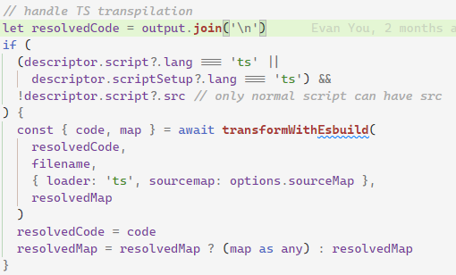
所以我首先尝试的方法就是按照 PR 所述直接修改 node_modules 里的文件，改完之后发现 vue 中的可选链被编译了，但是 ts 中的可选链仍然没有被编译，这个时候再搭配一下 config.esbuild.target 就能把两边问题都给解决了，不过这个方法要修改 node_modules 不太好。
后来换了 @rollup/plugin-babel 插件，配置完也不行，研究了下源代码，对于 ts 项目，需要配置 extensions 才行：
export const DEFAULT_EXTENSIONS: ['.js', '.jsx', '.es6', '.es', '.mjs'];
const unpackOptions = ({
extensions = babel.DEFAULT_EXTENSIONS,
// rollup uses sourcemap, babel uses sourceMaps
// just normalize them here so people don't have to worry about it
sourcemap = true,
sourcemaps = true,
sourceMap = true,
sourceMaps = true,
...rest
} = {}) => {
return {
extensions,
plugins: [],
sourceMaps: sourcemap && sourcemaps && sourceMap && sourceMaps,
...rest,
caller: {
name: '@rollup/plugin-babel',
...rest.caller
}
};
};
配置如下：
import { resolve } from 'path'
import { defineConfig } from 'vite'
import vue from '@vitejs/plugin-vue'
import babel from '@rollup/plugin-babel'
export default defineConfig({
plugins: [
vue(),
babel({
extensions: ['.ts', '.js', '.jsx', '.es6', '.es', '.mjs'],
plugins: [
'@babel/plugin-proposal-optional-chaining',
'@babel/plugin-proposal-nullish-coalescing-operator'
]
})
]
})
一眼看过去发现应该还是不行，因为缺少 .vue 文件的处理，试了一下果然不行，不过，扩展名里加 .vue 的话会报错，一般来说 .vue 文件编译之后会是 js，但是 .vue 里面如果包含了样式，会单独提取出来作为一个虚拟的文件，通过查询参数 type=style 来读取，这里以 babel 来转译样式文件当然报错。
看了下 @rollup/plugin-babel 的代码，发现还有 include/exclude/filter 选项可以使用，与扩展名之间是且的关系：
const userDefinedFilter =
typeof customFilter === 'function' ? customFilter : createFilter(include, exclude);
filter = (id) => extensionRegExp.test(stripQuery(id).bareId) && userDefinedFilter(id);
所以，我们只要限定一下，只转义以 .vue 为后缀的文件就行了：
import { resolve } from 'path'
import { defineConfig } from 'vite'
import vue from '@vitejs/plugin-vue'
import babel from '@rollup/plugin-babel'
export default defineConfig({
plugins: [
vue(),
babel({
include: [
/\.vue$/,
/\.ts$/
],
extensions: ['.vue', '.ts', '.js'],
plugins: [
'@babel/plugin-proposal-optional-chaining',
'@babel/plugin-proposal-nullish-coalescing-operator'
]
})
]
})
最后结果如下：
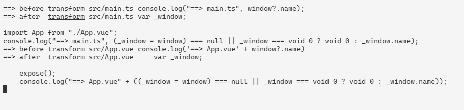
为了解决 chrome 的滚动条 bug（另外再吐槽下，最近 chrome 频繁升级导致的 bug 真的是不少），先得把 vite 不支持 chrome 老版本的问题解决……
前端通过 ffmpeg 库播放视频
仓库地址：https://github.com/hamflx/ffmpeg-fe
先看一下 chrome 支持的视频格式与解码器：

其中 H.265 并不在一般的 Chrome 上支持，有时候我们需要播放一些不常用的格式，那么我们就可以将 ffmpeg 库编译为 WebAssembly 以支持这些格式。
ffmpeg 是一个音视频处理的通用库，我们需要用 C++ 写一个调用 ffmpeg 的解码程序，该程序与 JS 进行通信，取得视频数据，并调用 ffmpeg 解码，将解码后的程序送给 JS，由 JS 调用 WebGL 渲染。

我这里以流的形式来取视频数据、解码，在播放器一侧在 requestAnimationFrame 中拉取视频数据：

构建 ffmpeg 库
首先需要把 ffmpeg 编译成几个库，后续我们的 C++ 解码程序就可以调用这个库里的方法，构建命令：
CPPFLAGS="-D_POSIX_C_SOURCE=200112 -D_XOPEN_SOURCE=600" \
emconfigure ./configure \
--prefix=$(pwd)/lib \
--cc="emcc" \
--cxx="em++" \
--ar="emar" \
--ranlib="emranlib" \
--target-os=none \
--enable-cross-compile \
--enable-lto \
--cpu=generic \
--arch=x86_64 \
--disable-asm \
--disable-inline-asm \
--disable-programs \
--disable-avdevice \
--disable-doc \
--disable-swresample \
--disable-postproc \
--disable-avfilter \
--disable-pthreads \
--disable-w32threads \
--disable-os2threads \
--disable-network \
--disable-logging \
--disable-everything \
--enable-gpl \
--enable-version3 \
--enable-static \
--enable-demuxers \
--enable-parsers \
--enable-decoder=pcm_mulaw \
--enable-decoder=pcm_alaw \
--enable-decoder=adpcm_ima_smjpeg \
--enable-protocol=file \
--enable-protocol=pipe \
--enable-decoder=h264 \
--enable-decoder=hevc
make && make install
以上构建命令成功后，将会得到下面的文件：

编写解码程序
通过 ffmpeg 的自定义流，来实现一个 read_packet 方法，该方法内部调用 js 的异步方法取得视频流，以此作为输入。程序主循环中不断尝试调用 avcodec_receive_frame 解码，当数据不足时，通过 av_read_frame 和 avcodec_send_packet 将数据发送给 ffmpeg 的解码器。
自定义输入流如下：
int nBufferSize = 32768;
unsigned char *pReadBuffer = (unsigned char*)av_malloc(nBufferSize);
if (pReadBuffer == NULL)
{
return DECODER_ERROR::AV_ERROR;
}
AVIOContext *pIoCtx = avio_alloc_context(pReadBuffer, nBufferSize, 0, (void*)this, DecoderReadPacket, NULL, NULL);
if (pIoCtx == NULL)
{
return DECODER_ERROR::AV_ERROR;
}
m_pFmtCtx = avformat_alloc_context();
m_pFmtCtx->pb = pIoCtx;
m_pFmtCtx->flags = AVFMT_FLAG_CUSTOM_IO;
int ret;
while ((ret = avformat_open_input(&m_pFmtCtx, NULL, NULL, NULL)) == AVERROR(EAGAIN))
{
}
if (ret)
{
return DECODER_ERROR::AV_ERROR;
}
int Decoder::ReadPacket(void *opaque, uint8_t*buf, int buf_size)
{
emscripten::val packet = m_jsUpstream.call<emscripten::val>("next", buf_size).await();
emscripten::val data = packet["data"];
emscripten::val done = packet["done"];
if (done.as<bool>())
{
return 0;
}
const auto nPacketLength = data["length"].as<unsigned>();
if (nPacketLength > buf_size)
{
printf("==> nPacketLength > buf_size\n");
}
emscripten::val memoryView{emscripten::typed_memory_view(nPacketLength, buf)};
memoryView.call<void>("set", data.call<emscripten::val>("slice", 0, nPacketLength));
return nPacketLength;
}
程序主循环解码（其实是在 JS 里调用 Next 到 C++ 的）如下：
while ((ret = avcodec_receive_frame(m_pCodecCtx, m_pFrame)) == AVERROR(EAGAIN))
{
while (1)
{
ret = av_read_frame(m_pFmtCtx, m_pPacketFrame);
if (ret == 0)
{
if (m_pPacketFrame->stream_index == m_iVideoStream)
{
break;
}
av_packet_unref(m_pPacketFrame);
continue;
}
printf("==> av_read_frame error: %s\n", av_err2str(ret));
av_packet_unref(m_pPacketFrame);
if (ret == AVERROR_EOF)
{
result.set("status", (int)DECODER_ERROR::END_OF_FILE);
return result;
}
if (ret != 0)
{
printf("av_read_frame failed: %s\n", av_err2str(ret));
result.set("status", (int)DECODER_ERROR::AV_READ_FRAME);
return result;
}
}
ret = avcodec_send_packet(m_pCodecCtx, m_pPacketFrame);
av_packet_unref(m_pPacketFrame);
if (ret != 0)
{
printf("==> avcodec_send_packet error: %s\n", av_err2str(ret));
result.set("status", (int)DECODER_ERROR::AVCODEC_SEND_PACKET);
return result;
}
}
Makefile
all: ../web/ff.js
rebuild: clean all
CC = emcc
CFLAGS = -O3 -I../lib/include
LIBOBJS := ../lib/lib/libavcodec.a ../lib/lib/libavutil.a ../lib/lib/libavformat.a
EMCCFLAGS = -gsource-map -g --bind -s ASYNCIFY -s WASM=1 -s ALLOW_TABLE_GROWTH=1 -s ALLOW_MEMORY_GROWTH=1 -s FILESYSTEM=0 -s ASSERTIONS=1
../web/ff.js: ff.cpp $(LIBOBJS)
$(CC) $(EMCCFLAGS) $(CFLAGS) -o $@ $^
fflib: build-ffmpeg.sh
sh build-ffmpeg.sh
clean:
rm -f ff.js ff.wasm
web 端
首先要实现一个视频来源对象，主要逻辑就是在调用 next 方法时，将视频数据返回，同时，如果数据太多，就先缓存着：
async function beginReadPacket() {
let cachedSize = 0
/**
* @type {Uint8Array[]}
*/
const cachedChunks = []
const reader = (await fetch('test.mkv')).body.getReader()
const combineChunks = size => {
let resultSize = 0
const result = new Uint8Array(size)
while (resultSize < size) {
const chunk = cachedChunks.shift()
if (chunk.length + resultSize > size) {
const needSize = size - resultSize
result.set(chunk.slice(0, needSize), resultSize)
resultSize += needSize
cachedChunks.unshift(chunk.slice(needSize))
break
} else {
result.set(chunk, resultSize)
resultSize += chunk.length
}
}
cachedSize -= result.length
return result
}
return async size => {
while (cachedSize < size) {
const { done, value } = await reader.read()
if (done) {
if (!cachedSize) return { done }
return { data: combineChunks(cachedSize) }
}
cachedChunks.push(value)
cachedSize += value.length
}
return { data: combineChunks(size) }
}
}
然后就是在 requestAnimationFrame 中调用 decoder.next 来拉去视频帧了，就不写了。当然，最后还有一步是拿解码后的 YUV 数据丢给 WebGL 渲染，具体就不展开了。
问题
虽然最开始是因为 H.265 无法播放，才去做这个东西的，但是吧，做完之后发现，就这样还真不一定能播放 mp4 封装的 H.265 视频。
对于 mp4 格式的文件信息 moov box 有可能是在文件最后的，我这里实现的方法是取视频流，一部分一部分的解码，就会导致取不到视频信息。所以对于这种视频文件，要么是把视频数据取完整了，一股脑塞进 ffmpeg 取识别，或者也可以把他的 moov box 放到前面，或者直接指定解码器参数也可以吧。
下面的命令将 mp4 视频的 moov box 放前面：
ffmpeg -i test.mkv -c:v libx265 -preset ultrafast -c:a copy -movflags faststart test.mp4
参考资料
- C/C++面向WebAssembly编程
- avformat_open_input fails only with a custom IO context
- avformat_open_input返回-1094995529 “Invalid data found when processing input“
- FFmpeg内存IO模式(内存区作输入或输出)
- ffmpeg 的编程教程
- 一步步进行ffmpeg的C语言音视频编程
- ffmpeg AVIOContext 自定义 IO 及 seek
- FFmpeg进行音频的解码和播放
又一个 WordPress 博客的初始配置
站点结构：nginx => WordPress
配置 HTTPS
# 生成公私钥对
ssh-keygen ...
# 生成证书申请请求
openssl req -new -sha256 -key cert.key -subj "/C=CN/ST=Anhui/L=Wuhu/O=whit/CN=hamflx.cn" \
-reqexts SAN -config <(cat /etc/pki/tls/openssl.cnf \
<(printf "[SAN]\nsubjectAltName=DNS:hamflx.cn,DNS:*.hamflx.cn")) \
>cert.csr
# 申请通配符证书
docker run -it --rm \
-e DP_Id=DP_Id \
-e DP_Key=DP_Key \
-v $PWD:/acme.sh \
neilpang/acme.sh \
--signcsr \
--csr /acme.sh/cert.csr \
--dns dns_dp
强制流量从 http 重定向到 https 的 nginx 的配置：
server {
listen 80 default_server;
listen [::]:80 default_server;
server_name _;
return 301 https://$host$request_uri;
}
配置 HTTP 2.0
server {
listen 443 default_server ssl http2;
listen [::]:443 default_server ssl http2;
server_name www.hamflx.cn hamflx.cn;
ssl_certificate /hamflx.cn/fullchain.cer;
ssl_certificate_key /hamflx.cn/cert.key;
location / {
root /usr/share/nginx/html;
index index.html index.htm;
# 注意这里一定要加，不然在登录的时候会一直重定向。
proxy_set_header X-Forwarded-Proto $scheme;
proxy_pass https://www.hamflx.cn;
}
}
配置邮箱
这里并不使用 WP-SMTP 类似的插件，而是通过“My Custom Functions”插件来实现这个功能。这个插件与邮箱功能无关，但是可以插入代码到 WordPress，这里只需要写一个邮箱功能初始化的函数插入到 WordPress 即可。
但是启用邮箱之后，激活邮件和重置密码邮件中的链接点击都无效，这是 WordPress 的一个 BUG。代码中的 h_mail_filter 函数即是为解决这个问题的。
在开始之前你需要一个具有 SMTP 功能的邮件服务器用来发送邮件，如果没有可以使用 QQ 邮箱。
配置清单
在 My Custom Functions 插件中的 Settings 页面中加入如下代码：
function h_override_mail_from_name($email) {
return '幻梦';
}
function h_override_mail_from($email) {
return 'service@hamflx.cn';
}
function h_mail_filter($args) {
$args['message'] = preg_replace("/<(.*?)>/", "$1", $args['message']);
return $args;
}
function h_mail_smtp($phpmailer) {
$phpmailer->IsSMTP();
$phpmailer->SMTPAuth = true;
$phpmailer->Port = 465;
$phpmailer->SMTPSecure = "ssl";
$phpmailer->Host = "smtp.qq.com";
$phpmailer->Username = "service@hamflx.cn";
$phpmailer->Password = "Your Token";
}
add_filter('wp_mail_from_name', 'h_override_mail_from_name');
add_filter('wp_mail_from', 'h_override_mail_from');
add_filter('wp_mail', 'h_mail_filter');
add_action("phpmailer_init", "h_mail_smtp");
启用 QQ 邮箱 SMTP 功能
若使用 QQ 邮箱，则需要启用 QQ 邮箱的 SMTP 功能并生成授权码（作为 SMTP 登录时的密码）。
在 QQ 邮箱的设置页面中进入到“账户”选项卡，找到下图的配置，启用“POP3/SMTP”服务、生成授权码。
参考资料
记一次内存泄漏的排查过程
JavaScript 是有垃圾回收机制的，一般不太需要考虑资源释放的问题。然而，即使有垃圾回收兜底，但是代码写的太过于奔放，仍然存在不小的问题。这篇文章就以 ******** 排查出的问题做个简单介绍（注：******** 为内部项目名称，下同）。
检查是否存在内存泄漏
有用户反馈在 ******** 使用过程中，偶尔会出现浏览器崩溃的问题，然后在一次发版本的过程中，**** 发现了内存占用达到了 1GB 程度，如下图（截图是后来截的，嫌麻烦就点到 579MB，多点几次总是能到 1GB 的 😏）：
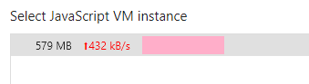
不过这 579MB 是正常内存占用，还是内存泄漏了呢？很简单，如果在使用过程中，内存占用未增加，或增加的都能在一段时间后（GC 执行了之后）正常释放掉，都是没有问题，但是如果在使用的过程中，内存一直增长而从未减少，即存在内存泄漏。
通过开发者工具里面的 Memory 面板，即可看到内存占用，使用 Heap snapshot 工具对内存占用做快照，在一顿猛烈的操作之前以及之后，分别做快照，然后对比一下就可以知道有没有内存泄漏了。
以 ******** 举例详细说下步骤：
- 弄清楚你要排查哪一步可能存在内存泄漏，比如我需要排查
A与B页面来回切换时，是否存在内存泄漏； - 先打开
********的 B 页面等待加载完毕，因为如果你切换快了，可能也会造成内存泄漏（比方说，在接口返回后添加事件），这里要一步步排查，就是控制变量法）； - 然后切换到 A 页面，做快照之前要先把目标页面加载一次，因为“冷启动”也是要消耗资源的；
- 再切换回 B 页面，在
Memory面板中选择Heap snapshot然后点Take snapshot做初始的快照（做快照之前要点击一次GC按钮，参照下图）； - 点击 A 页面 => 点击 B 页面 => 点击 A 页面 => 点击 B 页面，反正就是一顿操作就是了，注意手速，不要把其他不确定因素引入进来；
- 最后停留在做初始内存快照的页面，这里是 B 页面，然后再做一个内存快照（别忘了先点
GC按钮）； - 对比一下两个数字就好了，如果没有太大差距的话，显然是没有内存泄漏的（当然，为了避免误判，你可以多重复几次第
5步的操作），否则，存在内存泄漏。
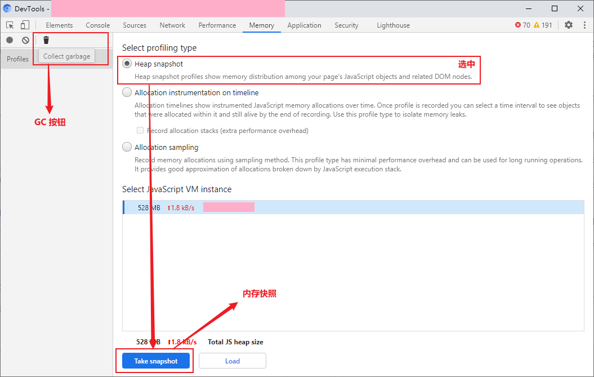
下面是 ******** 的（当然是点了很多很多次才会有这个数据的 🤣）：
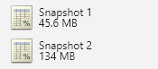
排查问题根源
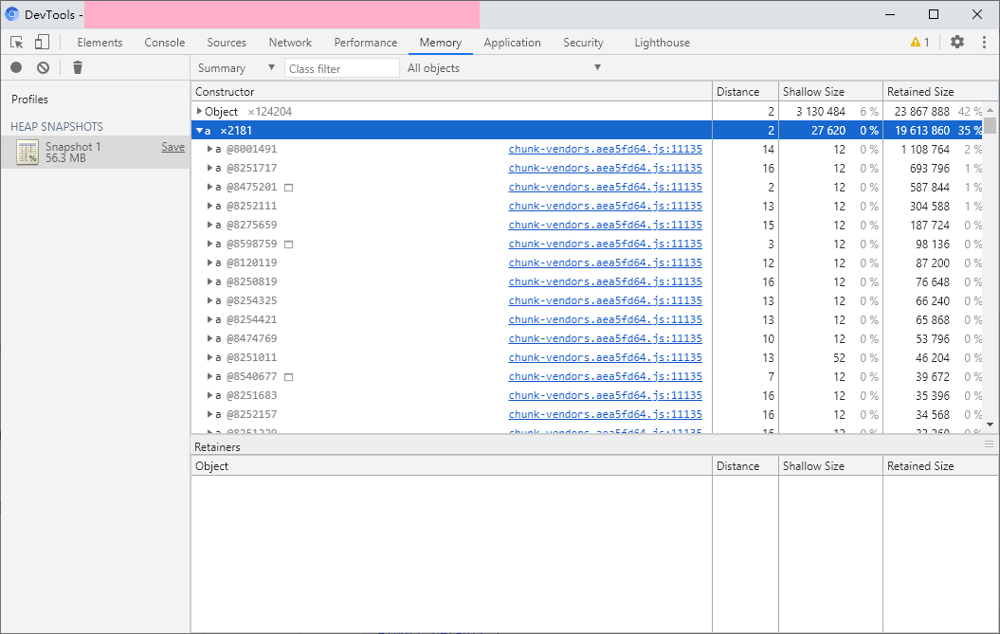
拿出上面步骤的第二个快照（图片里只有一个是因为我把第一个删了），展开 a（就是 VueComponent，经验），可以看到第一个 a 的“三围”：
Distance14 被引用的深度，表示由GC根（比如window对象、DOM 数根节点）到该对象之间最短的引用数量。Shallow Size浅层大小，该对象本身的大小。Reatined Size保留大小，表示如果当前对象被释放后，所有的从GC根无法达到的对象的总的大小，简单点说，释放了这个对象，能释放多少内存。
我们主要关注 Distance 和 Reatined Size，前者如果较大，我们可能就要关注一下这个对象是不是有问题。比如第一个 a 对象，鼠标悬浮 a @8001491 后，能看到该对象的数据：
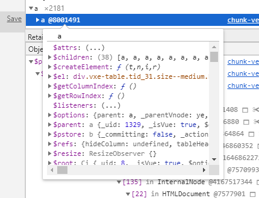
发现它是一个 Vue 组件的实例，鼠标悬浮到 $el 的值上面，如果这个元素仍然在页面上且是可见的，它就会像审查元素时一样覆盖一层蓝色矩形区域，显然这个没有（可以再展开其属性，看看 isConnected、className、innerHTML 了解具体是哪里的逻辑，以及是否从 DOM 树上移除了，这里的这个实例是一个表格组件）。而它的 Retained Size 则表示了，如果把这个对象给释放了，可以释放约 1MB 2% 的内存。
点击这个对象可以看到由该对象到 GC 根的引用关系：
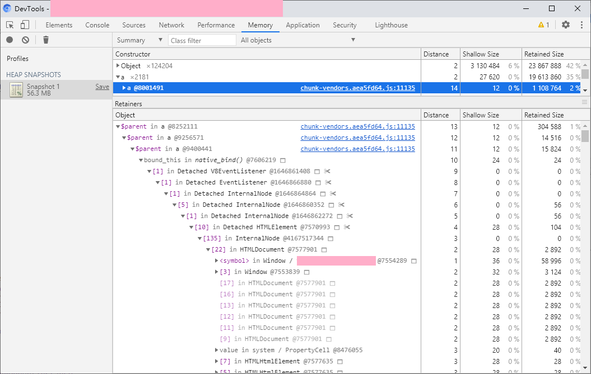
这张图说明：这个表格组件是另一个 a（VueComponent）组件的 $parent 属性，即作为另一个组件的父组件而被引用了，串联起来就是，这个表格组件被子组件引用了，子组件又被子组件引用了而子组件又被子组件引用了，而这个子组件又被一个方法引用了（这个方法使用 bind 绑定了这个组件），这个方法又被作为一个 DOM 元素的事件被引用了，而这个 DOM 元素又被 InternalNode 引用了，这个 InternalNode 属于 HTMLDocument。
即，这个表格里面有个组件添加了事件，但是组件销毁的时候没有把事件移除，所以，这个元素泄漏了，导致整个表格泄漏了。
将鼠标悬浮到 bound_this in native_bind() @7606219 上，可以看到：
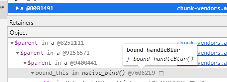
找到了这个被添加而没有被移除的事件叫 handleBlur。OK，你现在是不是想全局搜索 handleBlur 方法了？
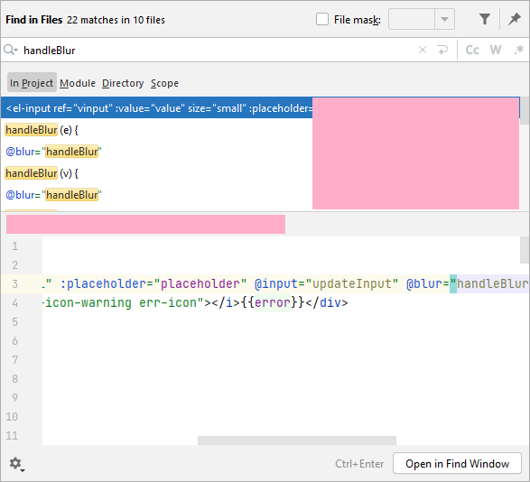
还真搜到了。。。不过，这样太麻烦了，可以看看这个 bind 绑定的到底是哪个组件，也就是鼠标悬浮这个上面的那一条记录 $parent in a @9400441，可以看到：
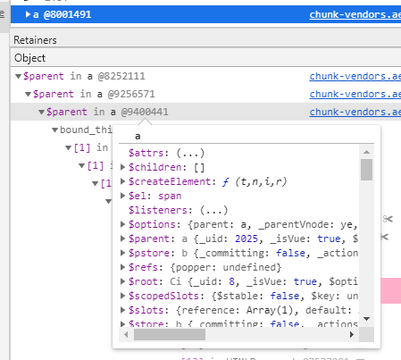
通过审查这个对象的 $el 可以知道，这是一个 el-popover 组件，也就是说 el-popover 监听了 handleBlur 事件，但是却没有移除，打开 element 仓库在 packages\popover\src\main.vue 中搜索 handleBlur：
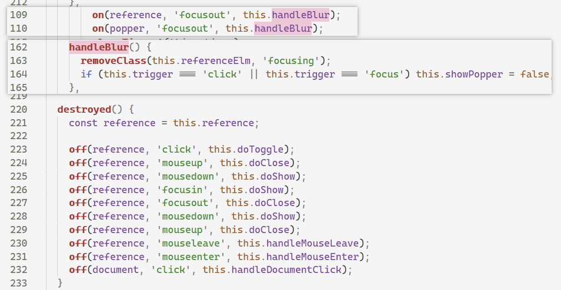
可以看到，只添加了该事件，而没有移除该事件。
修复内存泄漏问题
Google 搜索 el-popover 内存泄漏，然后复制、粘贴，over。不对，搜索结果第一条是：
el-popover leaking memory · Issue #2561 · ElemeFE/element ...
2017 年的 Issue，点开一看，对应的 PR 已经合并了，而且是点击事件，不是 focusout 事件，难道是定位错了？其实用 el-tooltip 内存泄漏、el-popover memory leak 为关键字搜索是可以搜索到 [Bug Report] Memory leak at el-tooltip cleanup，提这个 bug 的仁兄还提了两个 PR 修复 el-tooltip，还有位仁兄也提了 PR 修复 el-tooltip 和 el-popover，然而。。。
为了修复这个问题，而不克隆 element 仓库，我们可以重写对应的方法，这里我拿 el-tooltip 举例，原版的 el-tooltip 的 mounted 代码如下：
export default {
// code ...
mounted() {
this.referenceElm = this.$el;
if (this.$el.nodeType === 1) {
this.$el.setAttribute('aria-describedby', this.tooltipId);
this.$el.setAttribute('tabindex', this.tabindex);
on(this.referenceElm, 'mouseenter', this.show);
on(this.referenceElm, 'mouseleave', this.hide);
on(this.referenceElm, 'focus', () => {
if (!this.$slots.default || !this.$slots.default.length) {
this.handleFocus();
return;
}
const instance = this.$slots.default[0].componentInstance;
if (instance && instance.focus) {
instance.focus();
} else {
this.handleFocus();
}
});
on(this.referenceElm, 'blur', this.handleBlur);
on(this.referenceElm, 'click', this.removeFocusing);
}
},
// code ...
destroyed() {
const reference = this.referenceElm;
if (reference.nodeType === 1) {
off(reference, 'mouseenter', this.show);
off(reference, 'mouseleave', this.hide);
// 这里移除了 handleBlur 方法，但是前面添加的不是这个方法。。。
off(reference, 'focus', this.handleFocus);
off(reference, 'blur', this.handleBlur);
off(reference, 'click', this.removeFocusing);
}
}
}
通过如下方法重新实现它的相关方法：
import { Tooltip } from 'element-ui'
import { on } from 'element-ui/lib/utils/dom'
Tooltip.methods.handleFocus = function () {
if (!this.$slots.default || !this.$slots.default.length) {
this.doFocus()
return
}
const instance = this.$slots.default[0].componentInstance
if (instance && instance.focus) {
instance.focus()
} else {
this.doFocus()
}
}
Tooltip.methods.doFocus = function () {
this.focusing = true
this.show()
}
Tooltip.mounted = function () {
this.referenceElm = this.$el
if (this.$el.nodeType === 1) {
this.$el.setAttribute('aria-describedby', this.tooltipId)
// 这行代码在 Element 上的提交日志是为了无障碍访问，这将导致测试提一些 bug（点击空白处关闭详情页后，文字的 tooltip 仍然显示）。
// this.$el.setAttribute('tabindex', 0)
on(this.referenceElm, 'mouseenter', this.show)
on(this.referenceElm, 'mouseleave', this.hide)
on(this.referenceElm, 'focus', this.handleFocus)
on(this.referenceElm, 'blur', this.handleBlur)
on(this.referenceElm, 'click', this.removeFocusing)
}
}
export default {
install () {
}
}
即，将原来直接添加的事件，写成 handleFocus 方法（原来也有这个方法，故把原来的 handleFocus 方法改为 doFocus 方法，然后在 handleFocus 方法里调用，这样其 destroyed 里面释放的事件就是添加的事件了。
其他问题
通过同样的方式，还可以找到定时器未释放、点击事件未释放之类的问题，但都是项目内的代码，比较好解决就不展开了。
成果
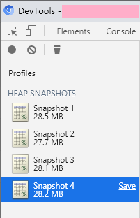
深入思考
不知道大家有没有注意，搜索中文的 el-popover 内存泄漏没有搜索到想要的结果，其实不移除事件一般也是可以的，而且不会造成内存泄漏，所以一般情况下比较难以发现这个问题。
现代浏览器都是用 标记-清除 算法或基于其改进的算法来实现的垃圾回收。其原理是从 GC 根开始，遍历所有引用的对象，并将其标记，当算法遍历完所有对象后，那些未被标记的对象将会被清除。
而 Vue.js 会在组件被销毁的时候，释放其引用，那么其引用的元素，以及元素引用的事件都将成为无根浮萍，会被 GC 回收。
再次审查上文中的表格组件，可以发现 V8EventListener 被 Detached HTMLElement 引用，而 Detached HTMLElement 又被 InternalNode 引用，这个 InternalNode 才是它没有被释放的真正原因。
至于这个 InternalNode 究竟是什么，我们 N 期之后再说（N → ∞）。
参考资料
增强 Vue 项目的智能感知
本文说的类型支持仅仅是 VS Code 的 IntelliSense 功能，并非静态类型语言的类型检查，所以对开发的效率提升不大，但是可以提高项目的可维护性，即所谓代码即文档 CaaD（Code as a Documentation -_-）。
VS Code 的 IntelliSense 功能
使用过 IDE 与静态类型语言的同学可能很熟悉了，比如 VS/C# 的自动导入命名空间、Code Refactor（重命名属性/方法/类名等标识符，并自动修改所有的引用）、转到定义（转到声明、查找引用）甚至代码段提取（提取一段代码作为一个函数，并自动将依赖的变量作为参数输入）等各种强大的功能。
而 JS 是一个动态类型的语言，为了支持上述功能，VS Code 团队开发了一个插件，名为 Visual Studio IntelliCode，最早该插件是作为一个外部扩展，后来直接作为内部扩展，可以直接使用。
以下摘自官网描述：
IntelliSense is a general term for a variety of code editing features including: code completion, parameter info, quick info, and member lists. IntelliSense features are sometimes called by other names such as "code completion", "content assist", and "code hinting."
蹩脚翻译如下：
智能感知是一系列编码特性的统称，包括自动补全、参数提示、快捷信息以及成员提示。……
特别注意：在成员提示被关闭的情况下可以使用快捷键 Ctrl+Space 重新打开成员提示（极大的可能与 Windows 系统默认的输入法切换键冲突导致失效，此时可以考虑更换快捷键），与 Ctrl+Shift+Space 打开参数提示。
配置 jsconfig.json
首先要说的是 jsconfig.json 文件。用 vue 脚手架生成的项目中，并无该文件，且一般情况下没有该文件也会有 IntelliSense 功能。
这里配置 jsconfig.json 的必要原因是：
- 无该文件会导致项目内的
.d.ts文件不一定被加载； - 对于
Vue项目来说，导入时使用@是很常见的行为，但是这将会导致IntelliSense无法识别。
一个常见的 jsconfig.json 配置如下：
{
"compilerOptions": {
"baseUrl": ".",
"paths": {
"@/*": [
"src/*"
]
}
},
"include": [
"./src/**/*.d.ts",
"./src/**/*.js",
"./src/**/*.vue"
]
}
这个 jsconfig.json 包含了对导入时 @ 的解析以及扫描项目 src 目录及其子目录下的 .d.ts、.js、.vue 文件，以建立类型、引用等相关信息（转到定义、查找引用以及自动导入的关键）。
配置完成后重新加载（Ctrl+Shift+P 输入 Reload Window 并回车）即可。此时输入 import '@/' 后会有路径提示（如果没有可能是还没有加载完成，耐心等待一会儿 -.-）。

值得注意的是，导入 SFC 文件时，文件的路径必须添加 .vue 后缀：
import FieldEdit from '@/components/FieldEdit.vue'
这样的话你就可以将光标移动到组件名称上按下 F12 键以导航到组件的定义，否则是无法导航到组件定义的，你会看到这样的提示：

另外，配置完成后，还可以在 <template> 标签中得到自定义组件的补全提示，如果没有导入，甚至可以在敲回车补全时自动导入：

至于提示的组件的命名方式可以在此处配置，具体每个选项都有描述就不说了：

JSDoc 注释
即使用注释来说明代码。在 VS Code 中可以通过在 js 类型的文件中输入 /** 来触发 JSDoc 代码片段，以下是一些实例：
/**
* 引用数据额外的信息发生了变化的事件。
*/
const EVENT_ISSUE_INFO_CHANGE = 'issue-info-change'
/**
* 所属的应用类型 ID。
*/
const ISSUE_TYPE = {
/** 需求。 */
REQUIREMENT: 1,
/** 任务。 */
TASK: 2
}
/**
* 将一个字符串反过来。
* @param {string} str 需要反转的字符串。
* @returns {string} 反转后的字符串。
*/
function reverseString (str) {
return str.split('').reverse().join('')
}
这种注释可以提供如下的效果，在成员提示的列表中可以显示注释内容，即做到文档的效果（同时鼠标悬浮时也会有文档的提示）：


可以看到，第二张图标注了传入参数 str 的类型，在输入 str.sp 时会给予成员提示，敲回车键后即会自动完成。
类型声明文件
类型声明文件是一个 .d.ts 文件，使用过 Type Script 的同学应该不陌生，在使用 Type Script 开发库项目时，如果需要发布到 npm 仓库，则需要编译成 js 发布，并可以用 tsc 生成对应的类型声明文件，以供使用者参照。
对于没有 Type Script 的 Vue 项目，仍然可以使用 .d.ts 文件带来的部分便利，虽然需要手写 .d.ts 文件。
一个 .d.ts 文件的例子如下：
/**
* 应用数据的模型。
*/
declare type IssueModel = {
/**
* 应用数据的属性字典。
*/
dataMap: {
[key in IssuePropertyNames]: IssueProperty
}
/**
* 可编辑的属性名称列表。
*/
editablePropertyList: string[]
}
/**
* 应用数据的数据属性名称列表。
*/
declare type IssuePropertyNames =
'id' |
'issuetype' |
'key' |
'project' |
'summary' |
'description'
/**
* 应用数据的属性定义。
*/
declare interface IssueProperty {
/**
* 属性的名称。
*/
name: string
/**
* 属性值的可读形式。
*/
label: string
/**
* 属性值。
*/
value: PropertyValue
}
/**
* 属性值的类型。
*/
declare type PropertyValue = boolean | number | string | boolean[] | number[] | string[]
上述代码并不会生成 js 代码，仅仅在开发期间被编辑器或集成开发环境识别以用作代码自动完成、成员提示等功能。在数据结构较为复杂时，可以利用类型声明文件作为文档以提高项目的可维护性。
虽然类型声明文件不参与 js 代码的执行，但是仍然可以利用类型声明文件影响到 js 代码的编写，将上述类型声明文件保存后，即可在 js 代码中以 JSDoc 的形式引用：
/**
* 应用数据模型。
* @type {IssueModel}
*/
const model = {
dataMap: {
issuetype: {
value: ISSUE_TYPE.REQUIREMENT
}
}
}
console.log(model.dataMap.issuetype.value)
效果如下：


SFC 的成员类型
<template>
<div>
<input v-model="value" @blur="handleInputBlur" />
</div>
</template>
<script>
export default {
props: {
/**
* 应用数据模型。
* @type {import('vue').PropOptions<IssueModel>}
*/
model: {
type: Object,
required: true
},
/**
* 需要编辑的字段。
* @type {import('vue').PropOptions<IssuePropertyNames>}
*/
property: {
type: String,
required: true
}
},
data () {
return {
value: this.model.dataMap[this.property].value,
/**
* @type {IssueModel}
*/
other: {}
}
},
methods: {
/**
* 获取属性值。
* @param {IssueModel} issue 应用数据模型。
* @param {IssuePropertyNames} property 属性名称。
* @returns {PropertyValue} 属性值。
*/
getPropertyValue (issue, property) {
issue.dataMap[property].value
},
handleInputBlur () {
this.$emit('submit', this.model, this.property, this.value)
}
}
}
</script>
上面分别标记了 props、data、methods 的数据类型、参数及返回值，在引用这些属性、变量时，将会有自动完成提示、参数信息等：


自动导入功能
在引用一些常用的导出符号时，如果这个符号没有被导入，则可以在打开的成员提示中找到这个标识符，并键入回车完成自动补全，这个时候会自动导入这个标识符：

在提示信息中说明了 Import 'ISSUE_TYPE' from module "@/constatns/issueType"，键入回车即可自动导入该标识符。
vuedraggable 使用问题记录
- 本文引用的
Sortable.js源码commit id为：1dff5e1 - 本文引用的
vuedraggable源码commit id为：2fd91d6
vuedraggable 官方地址：https://sortablejs.github.io/Vue.Draggable/
vuedraggable 是一个封装了 Sortable.js 的 vue 组件，将拖动同步到对应的数据模型上，提供了 Sortable.js 的所有特性。
但是 vuedraggable 提供的 vue 组件对动态绑定的属性并不能较好的兼容，会引发一些莫名奇妙的问题。
考虑一个典型的拖动场景，有待办、进行及完成三个泳道，每个泳道里面有若干卡片，待办中的卡片可以拖动到进行的泳道，反之进行的卡片则无法拖动到待办的泳道，若要在拖动时，高亮显示可以放置的泳道，则可以在 start 事件记录下拖动的卡片，通过双向绑定设置是否可以放置的类名 is-droppable。
<!-- is-droppable 用于设置拖动时，可以放置的样式，在拖动过程中，isLaneDroppable 将会返回 true，否则为 false -->
<div :class="{ 'is-droppable': isLaneDroppable(item) }">
<Draggable :sort="false">
<div></div>
</Draggable>
</div>
在这种 draggable 组件的父级元素绑定了动态属性的情况下，会导致 sort 属性不生效，初步猜测是 DOM 结构更新后，Sortable.js 未能匹配上，导致 sort 的判断失效。
因此，在使用 draggable 时，最好不要在拖动的过程中，修改动态绑定的属性的值，避免拖动时更新 DOM。
避免使用双向绑定，同时再配合 start 事件，在该事件中找到所有可以放置的泳道，并通过直接操作 DOM 的形式，给可以放置的元素添加 is-droppable 类名可以解决该问题。
在该场景上考虑另一个问题，若需要在拖动时，当前鼠标悬停的、可放置的泳道上设置一个有别于可放置的样式（比方说，可放置是虚线边框，悬停的是实现边框且有背景色），基于先前的经验避开使用双向绑定的方法，直接使用 move 事件操作对应的 DOM，添加 is-target 类名。
此时会有一个新的问题，当 :sort="false" 触发时（即，鼠标移动到原泳道但非卡片原位置，将会触发拖动的重置，此时卡片的占位符将会回到拖动前的位置），将不会触发 move 事件，即，悬停高亮将没办法更新，还是为原先设置的元素高亮。
检查 Sortable.js 源码的 1287-1306 行：
if (revert) {
parentEl = rootEl; // actualization
capture();
this._hideClone();
//@ts-ignore
dragOverEvent("revert");
//@ts-ignore
if (!Sortable.eventCanceled) {
if (nextEl) {
rootEl.insertBefore(dragEl, nextEl);
} else {
rootEl.appendChild(dragEl);
}
}
return completed(true);
}
可知，在拖动被重置时，会触发 revert 事件，检查 dragOverEvent 函数的定义可知，这是一个在插件上触发的事件，而非 Sortable.js 实例事件，因此，可以编写一个插件，监听该事件，并将该事件在实例上触发，便可以解决该问题。
检查 vuedraggable 源代码的第 197-228 行：
mounted() {
// ...
!("draggable" in options) && (options.draggable = ">*");
this._sortable = new Sortable(this.rootContainer, options);
this.computeIndexes();
},
可以使用以下的方法获取内部的 Sortable.js 引用：
import Vue from 'vue'
import Draggable from 'vuedraggable'
const Tmp = Vue.extend(Draggable)
const tmp = new Tmp().$mount()
const Sortable = tmp._sortable.constructor
参考 on-spill 插件，可以编写出如下的插件：
function RevertEventPlugin () {}
RevertEventPlugin.prototype = {
constructor: RevertEventPlugin,
revertGlobal ({ dispatchSortableEvent }) {
dispatchSortableEvent('revert')
}
}
Object.assign(RevertEventPlugin, {
pluginName: 'revertEventPlugin'
})
将以上两部封装为一个模块，用于替代 vuedraggable 模块：
/*
* 描述：返回一个可以触发 revert 事件的 vuedraggable 组件
* 文件名：src/utils/vuedraggableWithRevert.js
*/
import Vue from 'vue'
import Draggable from 'vuedraggable'
function RevertEventPlugin () {}
RevertEventPlugin.prototype = {
constructor: RevertEventPlugin,
revertGlobal ({ dispatchSortableEvent }) {
dispatchSortableEvent('revert')
}
}
Object.assign(RevertEventPlugin, {
pluginName: 'revertEventPlugin'
})
const getDraggableWithRevertEvent = () => {
const Tmp = Vue.extend(Draggable)
const tmp = new Tmp().$mount()
const Sortable = tmp._sortable.constructor
Sortable.mount(RevertEventPlugin)
return Draggable
}
export default getDraggableWithRevertEvent()
在使用时，直接将 import Draggable from 'vuedraggable' 替换为 import Draggable from './src/utils/vuedraggableWithRevert' 即可，若需要监听 revert 事件，添加一个具有 onRevert 属性的 options。
<Draggable
:sort="false"
:options="{ onRevert: handleCardItemRevert }"
/>
</Draggable>
玩饥荒联机版日志
搭建独立服务器
-
安装
SteamCMD。首先创建steam用户，然后下载SteamCMD：https://steamcdn-a.akamaihd.net/client/installer/steamcmd_linux.tar.gz 解压安装，安装位置任意，详细步骤及依赖关系推荐参阅此处。 -
运行
steamcmd.sh -
登陆并安装服务器：
login anonymous force_install_dir /home/steam/dstserver app_update 343050 validate quit -
配置服务器。可在
Windows上使用图形界面启动具有洞穴的服务器，然后清除该存档记录并将其复制到/home/steam/.klei/DoNotStarveTogether目录中即可。也可以先将存档复制到上述目录，然后使用下述脚本清除存档：# 其中 /home/steam/.klei/DoNotStarveTogether/GlxinWorld 为世界存档目录 rm -rf /home/steam/.klei/DoNotStarveTogether/GlxinWorld/{Master,Caves}/save -
启动服务器。
# 必须进入该目录，否则可能会无法加载 # 其中 Cluster_1 改为对应的存档名称 cd /home/steam/dstserver/bin ./dontstarve_dedicated_server_nullrenderer -console -cluster Cluster_1 -shard Caves ./dontstarve_dedicated_server_nullrenderer -console -cluster Cluster_1 -shard Master
Tip：有些系统（如：CentOS 7）不提供 libcurl-gnutls.so.4 那么将其链接到 libcurl.so.4 即可。
多世界并存：若要在一台服务器上运行多个饥荒服务器，则需要修改存档的 Master 及 Caves 目录中 server.ini 的 server_port 使其各不相同，且在 10998-11018 范围内。且每个存档的 cluster.ini 中 master_port 应唯一，该端口用于存档的地面与洞穴之间通信。 饥荒服务器在启动时同样会监听 127.0.0.1:10888/UDP 端口和一个非固定 TCP 端口，可能这些也需要修改。初步猜测该端口可能用于存档的地面与洞穴之间通信，多个存档应修改该端口。
跨服务器世界：即将洞穴服务器与地面服务器分离，将存档的 cluster.ini 中 master_ip 与 master_port 配置为地面服务器的 IP 地址和端口即可。
一键启动脚本
其中变量按需修改，若不希望每次启动都检查更新，将脚本中检查更新的行注释即可。另外，最新版不购买可能导致搜素不到世界的问题，故可以按照下一节介绍安装 247691 版本。
#!/bin/bash
steamcmd_dir="$HOME/Steam"
install_dir="$HOME/dstserver"
cluster_name="GlxinWorld"
dontstarve_dir="$HOME/.klei/DoNotStarveTogether"
function fail()
{
echo Error: "$@" >&2
exit 1
}
function check_for_file(){
if [ ! -e "$1" ]; then
fail "Missing file: $1"
fi
}
cd "$steamcmd_dir" || fail "Missing $steamcmd_dir directory!"
check_for_file "$steamcmd_dir/steamcmd.sh"
check_for_file "$dontstarve_dir/$cluster_name/cluster.ini"
check_for_file "$dontstarve_dir/$cluster_name/cluster_token.txt"
check_for_file "$dontstarve_dir/$cluster_name/Master/server.ini"
check_for_file "$dontstarve_dir/$cluster_name/Caves/server.ini"
# 检查更新，若不需要每次启动都检查更新，将其注释即可
~/Steam/steamcmd.sh +force_install_dir "$install_dir" +login anonymous +app_update 343050 validate +quit
check_for_file "$install_dir/bin"
cd "$install_dir/bin" || fail
run_shared=(./dontstarve_dedicated_server_nullrenderer)
run_shared+=(-console)
run_shared+=(-cluster "$cluster_name")
run_shared+=(-monitor_parent_process $$)
"${run_shared[@]}" -shard Caves | sed 's/^/Caves: /' &
"${run_shared[@]}" -shard Master | sed 's/^/Master: /'
下载指定版本
- 进入
SteamDB查找游戏，记录AppID。 - 进入
Depots找到对应平台，记录DepotID。 - 点击
DepotID=>Manifests找到需要的版本，记录ManifestID。 Windows下运行steam://nav/console进入控制台/Linux下执行steamcmd.sh。- 若是
Linux用户，需要执行login anonymous登陆；若不是Linux用户则跳过。 - 执行
download_depot <AppID> <DepotID> <ManifestID>进行下载。 - 执行
quit退出。
若下载失败，可退出从第 4 步重新开始。实际测试发现，下载成功率非常低，故建议使用外网服务器，且具有不低的带宽。
上述过程得到 DST 的信息如下：
- AppID: 343050
- Linux DepotID: 343052
- Latest Version ManifestID: 3637127330667398786
- Version 247691 ManifestID: 6994825278996354537
- SteamDB URL: https://steamdb.info/app/343050/
进入控制台（Win + R 运行）:
steam://nav/console
下载 247691 版本游戏：
download_depot 343050 343052 6994825278996354537
Linux 可在控制台直接执行：
steamcmd.sh +login anonymous +download_depot 343050 343052 6994825278996354537 +quit
SteamCMD 根据游戏 depot id 进行存储，故一个游戏可下载多个 depot 对应的版本，但每个 depot 仅能下载一个 manifest 对应的版本。
参考资料
steam_commands SteamCMD – Valve Developer Community 饥荒联机版独立服务器搭建踩坑记录 – Blessing Studio 【社区指南翻译】如何下载旧版的游戏 – 平台研讨 – SteamCN 蒸汽动力 – 驱动正版游戏的引擎！ 通过depot下载得到旧版游戏及一个衍生应用 – 平台研讨 – SteamCN 蒸汽动力 – 驱动正版游戏的引擎！ Guide: How to download older versions of a game on Steam：Steam 饥荒联机独立服务器搭建教程（三）：配置篇 | 天天の記事簿 Create UDP to TCP bridge with socat/netcat to relay control commands for vlc media-player – Unix & Linux Stack Exchange
Playing outside the LAN
对游戏端口 UDP 10998/10999 进行转发，可实现在外网进入内网的游戏服务器。其简单 python2 脚本如下：
agent_v3.py：
#!/usr/bin/env python2
# -*- coding: utf-8 -*-
"""
Usage:
agent.py -h | --help
agent.py client [-p BASE_PORT]
agent.py server [-p BASE_PORT]
Options:
-h --help show this
-p BASE_PORT, --port BASE_PORT specify base port
Examples:
agent.py client
"""
from threading import Thread
from docopt import docopt
from time import sleep
from socket import socket, AF_INET, SOCK_DGRAM
LOCALHOST_IP = '127.0.0.1'
MASTER_IP_ADDRESS = '172.18.135.5'
MASTER_PORT = 10999
CAVES_IP_ADDRESS = '172.18.135.5'
CAVES_PORT = 10998
BASE_TRANSFER_PORT = 10001
BUFFER_SIZE = 10485760
def remote_to_local(sock_local, sock_remote, addr, buffsize):
while True:
data = sock_remote.recv(buffsize)
if len(data):
sock_local.sendto(data, )
pass
def local_to_remote(local, remote, buffsize):
conn_dict = {}
sock_local = socket(AF_INET, SOCK_DGRAM)
sock_local.bind(local)
sock_remote = None
while True:
data, addr = sock_local.recvfrom(buffsize)
if addr in conn_dict:
sock_remote = conn_dict[addr]
else:
sock_remote = socket(AF_INET, SOCK_DGRAM)
sock_remote.connect(remote)
Thread(target=remote_to_local, args=(sock_local, sock_remote, addr, buffsize))
sock_remote.sendall(data)
def build_connection(local, remote, buffsize):
thread = Thread(target=local_to_remote, args=(local, remote, buffsize))
thread.setDaemon(True)
thread.start()
def check_connection(conns):
for conn in conns:
if not conn['t_l2r'].isAlive():
return False
if not conn['t_r2l'].isAlive():
return False
return True
def main(client_mode, base_port):
master_listen, master_remote = None, None
caves_listen, caves_remote = None, None
if client_mode:
master_listen = ('0.0.0.0', MASTER_PORT)
master_remote = (MASTER_IP_ADDRESS, base_port)
caves_listen = ('0.0.0.0', CAVES_PORT)
caves_remote = (CAVES_IP_ADDRESS, base_port + 1)
else:
master_listen = ('0.0.0.0', base_port)
master_remote = (LOCALHOST_IP, MASTER_PORT)
caves_listen = ('0.0.0.0', base_port + 1)
caves_remote = (LOCALHOST_IP, CAVES_PORT)
conns = []
conns.append(build_connection(master_listen, master_remote, BUFFER_SIZE))
conns.append(build_connection(caves_listen, caves_remote, BUFFER_SIZE))
try:
while check_connection(conns):
sleep(1)
except KeyboardInterrupt as e:
print 'User interrupted'
return None
if __name__ == '__main__':
arguments = docopt(__doc__)
main(arguments['client'], int(arguments['--port'] or BASE_TRANSFER_PORT))
脚本依赖 docopt。
forward_v1.py：
#!/usr/bin/python2
# coding: utf-8
import sys
from time import sleep
from Queue import Queue
from select import select
from socket import socket, AF_INET, SOCK_DGRAM, SOL_SOCKET, SO_REUSEADDR
# 512KB
BUFFER_SIZE = 524288
LEVEL_INFO = 0
LEVEL_ERROR = 1
def log(level, text):
if level == LEVEL_ERROR:
print text
def do_forwarding(options):
sock_remote = socket(AF_INET, SOCK_DGRAM)
sock_remote.setblocking(False)
sock_remote.setsockopt(SOL_SOCKET, SO_REUSEADDR, 1)
sock_remote.bind(options["bind"])
connections = {}
inputs = [sock_remote]
outputs = []
msg_queues = []
while True:
try:
readable, writable, exceptional = select(inputs, outputs, [], 0.1)
except KeyboardInterrupt:
break
if not (readable or writable or exceptional):
continue
for sock in readable:
try:
data, address = sock.recvfrom(BUFFER_SIZE)
except Exception, ex:
log(LEVEL_ERROR, 'Error: ' + repr(ex))
if len(data) == 0:
continue
log(LEVEL_INFO, 'Received from: ' + repr(address))
sleep
if sock is sock_remote:
if address in connections:
sock_out = connections[address]
log(LEVEL_INFO, 'Host already exists: ' + repr(address))
else:
sock_out = socket(AF_INET, SOCK_DGRAM)
sock_out.connect(options["host"])
connections[address] = sock_out
inputs.append(sock_out)
log(LEVEL_INFO, 'Added remote host: ' + repr(address))
addr_out = options["host"]
else:
for src_addr, src_sock in connections.iteritems():
if src_sock is sock:
addr_out = src_addr
sock_out = sock_remote
msg_queues.append({ "to": addr_out, "sock": sock_out, "data": data })
outputs.append(sock_out)
log(LEVEL_INFO, 'Add sock to output list: ' + repr(sock_out.getsockname()))
for sock in writable:
log(LEVEL_INFO, 'Sock want to send data: ' + repr(sock.getsockname()))
remains_msgs = []
for msg in msg_queues:
if msg["sock"] is sock:
log(LEVEL_INFO, 'Hint message')
try:
sock.sendto(msg["data"], msg["to"])
log(LEVEL_INFO, 'Sent to: ' + repr(msg["to"]) + ' via: ' + repr(sock.getsockname()))
except Exception, ex:
log(LEVEL_ERROR, 'Error: ' + repr(ex))
else:
remains_msgs.append(msg)
msg_queues = remains_msgs
if writable:
outputs = []
for addr, sock in connections.iteritems():
sock.close()
sock_remote.close()
def parse_arguments(args):
if len(args) != 2:
return None
params = args[1].split(':')
options = { "agent_port": 12345 }
if len(params) == 3:
options["bind"] = "127.0.0.1", int(params[0])
options["host"] = params[1], int(params[2])
elif len(params) == 4:
options["bind"] = params[0], int(params[1])
options["host"] = params[2], int(params[3])
else:
return None
return options
def usage():
print "Usage: forward.py [bind_ip:]bind_port:host_ip:host_port"
exit(1)
def main():
options = parse_arguments(sys.argv)
if options:
do_forwarding(options)
else:
usage()
if __name__ == '__main__':
main()
Server 端监听需要转发的端口，并接受多条连接，建立表维护连接信息，在接收到数据时连带连接信息发送给连接到 Server 端的 Client 端。
问题
在启动 dontstarve_dedicated_server_nullrenderer 进程时，可能遇到如下错误：
-
[S_API FAIL] SteamAPI_Init() failed; SteamAPI_IsSteamRunning() failed.忽略即可。 -
Segmentation fault (core dumped)可能是游戏中的steamclient.so库文件与SteamCMD中的steamclient.so文件版本不匹配导致。删除该文件，并将SteamCMD中的该文件链接到游戏中该文件。# 将游戏中的 steamclient.so 备份为 steamclient.so.bak 后将 SteamCMD 中的 steamclient.so 链接到游戏中对应的位置 # 下面命令假定 SteamCMD 安装在 /home/steam/Steam，饥荒联机版安装在 /home/steam/dstserver cd /home/steam/dstserver/bin/lib32 mv steamclient.so{,.bak} ln -s /home/steam/SteamCMD/linux32/steamclient.so /home/steam/dstserver/bin/lib32/steamclient.so # 若无法解决问题，则可以通过如下命令恢复 mv /home/steam/dstserver/bin/lib32/steamclient.so.bak /home/steam/dstserver/bin/lib32/steamclient.so若运行上述命令解决问题后，则应将世界启动脚本中的更新指令移除。若不移除，游戏的更新、校验都会将上述修改覆盖，从而导致游戏无法运行。
# 在脚本中找到下面这一行，并将其注释 #~/Steam/steamcmd.sh +force_install_dir "$install_dir" +login anonymous +app_update 343050 validate +quit
Backup & Restore
Backup
# 进入存档目录
cd /home/steam/.klei/DoNotStarveTogether/GlxinWorld
# 建立存档备份目录
mkdir ../backup
# 执行备份
zip -r ../backup.$(date +%Y%m%d%H%M%S).zip .
Restore
# 进入存档目录
cd /home/steam/.klei/DoNotStarveTogether/GlxinWorld
# 列出存档列表，并找出需要恢复的存档
ls ../backup
# 恢复存档
find . -delete && unzip ../backup/backup.20180614173011.zip
Automatically backup
在基于 Systemd 的 Linux 系统上，创建如下两个文件实现每 3h 对存档做一次备份。由于在游戏运行状态中，存档目录会包含许多临时文件，
/usr/lib/systemd/system/dst-backup.service：
[Unit]
Description=Don't Starve Together Backup
[Service]
Type=oneshot
ExecStart=/bin/bash -c 'cd /home/steam/.klei/DoNotStarveTogether/GlxinWorld && zip -r ../backup/backup.$(date +%%Y%%m%%d%%H%%M%%S).zip .'
User=steam
/usr/lib/systemd/system/dst-auto-backup.timer：
[Unit]
Description=Don't Starve Together Auto Backup
[Timer]
OnUnitActiveSec=3h
Unit=dst-backup.service
[Install]
WantedBy=multi-user.target
Chrome 时代的浏览器兼容性测试
对于这个标题，我想有一些人是很有疑惑的，对于 IE 时代来说，确实需要去研究浏览器的兼容性，但是对于浏览器中的老大 Chrome，我们需要考虑它的兼容性吗？
就我目前做的项目，目标用户都是使用 Chrome 浏览器，但是仍然在工作中碰到很多关于 Chrome 的问题，比如：
- 用户反馈你们的软件开了一天就卡的不行，有时候半天不到就会崩溃，然后你吭哧吭哧去解决内存泄漏的点，然后自己测试发现没问题，但是一上线，客户又反馈卡卡卡（浏览器内存泄漏）；
- 用户机器上，表格的渲染有时缺一某一条边框，有时候有的边框特别粗；
- 明明没有设置
z-index，或者设置了较小的z-index，但是滚动到容器下面的时候，被遮住的那部分滚动条却突破了容器显示出来了； - 开发时没考虑
API兼容性，用了replaceAll，然后在用户机器上挂掉了； - 因为要嵌入第三方页面，考虑到
Chrome变更了SameSite策略，默认为None，需要兼容新旧版本的Chrome； Chrome删除了/deep/的支持，导致项目中错误使用/deep/的地方样式崩溃；Chrome在某个版本删除了Event.path的支持，然后用这个的地方也都崩了。
上述情况有些是属于 bug，有些是浏览器更新太快而开发人员知识没有跟上，还有些就是单纯的开发人员的失误。
像 Event.path 实际上是一个非标准属性，在 Chrome 100 上还可以正常使用，在 Chrome 101 的时候，如果你使用这个属性，会在 Issues 里输出一个 Deprecated Feature Used 的警告。然后在 Chrome 104 里就不能用了。然而你高强度开发的时候，真的会在意这个警告吗？
所以，浏览器的兼容性问题一直都在，只不过，从兼容 IE 变换为兼容老版本 Chrome 和兼容新版本 Chrome，以及兼容特定版本 Chrome。
因此，你可能会需要频繁的下载不同版本的 Chrome 来做各种兼容性测试，这之前对我来说是个比较麻烦的事，我不喜欢通过第三方网站下载的安装包，通过官方 Chromium 给出的方法又太麻烦。
后来无意间看到这个仓库：google/fetchchromium，但是这个工具需要提供 revision，不能通过版本号下载，然后我就自己搞了一个 hamflx/fetchbrowser，可以通过给定版本号下载特定的 Chromium 浏览器，另外，也支持下载 Firefox。
fetchbrowser
仓库地址：https://github.com/hamflx/fetchbrowser，欢迎 star (❁´◡`❁)。
安装方式：
irm https://raw.githubusercontent.com/hamflx/fetchbrowser/master/install.ps1 | iex
下载 Chromium 98：
fb 98
注意：在特定平台第一次下载 Chromium 会比较慢，因为会联机查找版本信息，后续会使用缓存的数据。
下载 Chromium 109.0.5414.120：
fb 109.0.5414.120
下载 Firefox 98：
fb --firefox 98
对 Firefox 的支持可能会有问题，因为 Firefox 官方只提供了安装包的安装形式，这里是下载了官方的安装包后解压实现的。